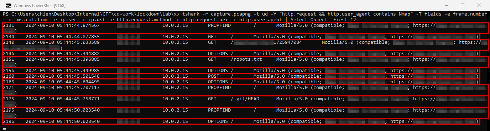
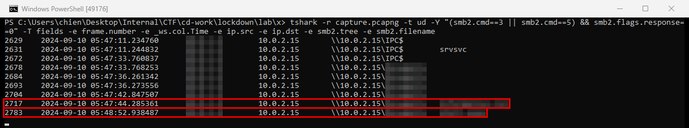
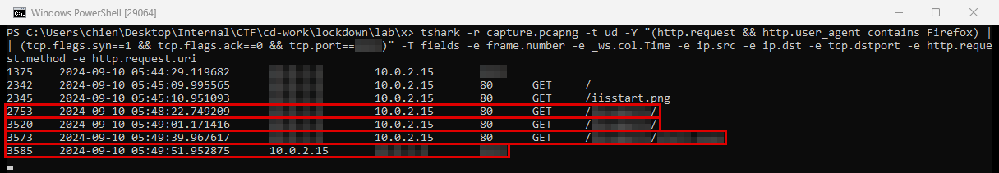
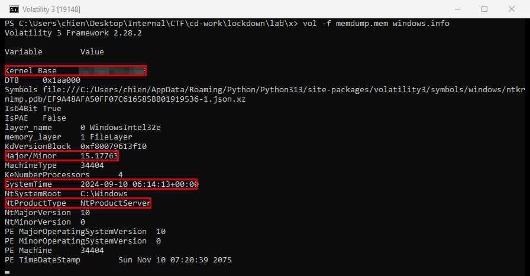
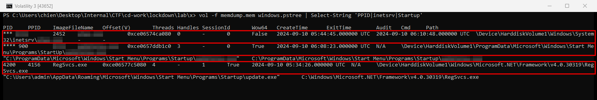
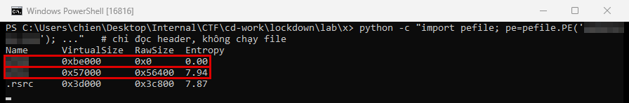

Lockdown
- Lab: Lockdown trên CyberDefenders. Nhóm Network Forensics, độ khó Easy, đã retired.
- Dữ liệu: file lab gồm 3 phần:
capture.pcapng: bản ghi lưu lượng mạng của máy chủ web (khoảng 6.300 gói);- memory dump (bản chụp RAM) của máy chủ;
- một file thực thi trích ra từ máy chủ.
- Công cụ:
tshark(bản dòng lệnh của Wireshark) để lọc PCAP, thư viện Pythonpefileđể đọc PE header, Volatility 3 cho memory dump. File mã độc chỉ được đọc tĩnh, không chạy. - Quy ước:
- Giờ trong PCAP là UTC. Mốc chính ghi dạng
UTC (UTC+7). - Khung đỏ trên ảnh là chỗ cần chú ý.
- Vùng làm mờ là giá trị trùng với đáp án của câu hỏi trong lab.
Tóm tắt kết quả
- Máy chủ web IIS có IP
10.0.2.15. Một máy khác trong cùng subnet dò quét HTTP vào máy chủ. Trường User-Agent cho biết công cụ quét. - Kẻ tấn công kết nối SMB, liệt kê share qua
IPC$, rồi vào một share dữ liệu ánh xạ tới thư mục web của IIS. - Qua share đó, kẻ tấn công ghi một web shell ASPX (trang web cho phép chạy lệnh từ xa) lên máy chủ, rồi gọi nó qua HTTP.
- 12 giây sau khi web shell được gọi, chính máy chủ mở kết nối TCP ra máy kẻ tấn công. Đây là reverse shell (kết nối ngược ra ngoài để nhận lệnh).
- File thực thi trích ra bị nén bằng một packer phổ biến (Bước 6). Trong memory, file này chạy từ thư mục Startup dùng chung, do tiến trình worker của IIS tạo ra (Bước 4-5).
- Máy chủ web bị xâm nhập: có bằng chứng ghi và thực thi web shell, reverse shell, và file mã độc được đặt để tự chạy.
Bước 1: dò quét HTTP
- Mục tiêu: tìm nguồn của hoạt động trinh sát.
- Cách làm: lọc các request HTTP mà máy lạ gửi tới máy chủ, in kèm User-Agent.
tshark -r capture.pcapng -t ud -Y "http.request && ip.src==<IP>" -T fields `
-e frame.number -e _ws.col.Time -e ip.src -e ip.dst -e http.request.method -e http.request.uri -e http.user_agent

- Nhận định:
- Nhiều phương thức HTTP khác nhau, URI kiểm tra kiểu
/<chuỗi>1725947084vàrobots.txttrong vòng một giây là kiểu dò quét tự động, không phải người dùng. - Thống kê SYN cho thấy cùng IP này mở 44 kết nối tới cổng 445 và 29 tới cổng 80, cộng nhiều cổng lẻ khác. Đây là dấu hiệu quét cổng.
- Hướng giải: IP nguồn ở cột
src, công cụ quét nằm trong User-Agent.
Bước 2: truy cập share SMB và ghi file
- Mục tiêu: xem kẻ tấn công vào máy chủ qua share nào và đưa file gì lên.
- Cách làm: lọc gói SMB2 Tree Connect Request (yêu cầu kết nối tới một share), rồi lọc SMB2 Create (mở hoặc tạo file) để thấy tên file.
tshark -r capture.pcapng -t ud -Y "smb2.cmd==3 && smb2.flags.response==0" -T fields -e frame.number -e _ws.col.Time -e ip.src -e ip.dst -e smb2.tree
tshark -r capture.pcapng -t ud -Y "smb2.cmd==5 && smb2.flags.response==0" -T fields -e frame.number -e _ws.col.Time -e ip.src -e smb2.filename

- Nhận định:
IPC$là share đặc biệt dùng cho giao tiếp giữa các tiến trình. Frame 2631 mở pipesrvsvc, tức là kẻ tấn công liệt kê danh sách share của máy chủ.- Share dữ liệu ánh xạ tới thư mục mà IIS phục vụ (Bước 3 thấy cùng tên thư mục trong URL). Ai ghi được vào share này là đặt được file lên website.
- Hướng giải: tên share ở cột
sharecủa các gói Tree Connect, theo đúng thứ tự frame.
Bước 3: web shell và reverse shell
- Mục tiêu: xác định cách kẻ tấn công chạy lệnh trên máy chủ.
- Cách làm:
- Lọc request HTTP có User-Agent của trình duyệt (khác User-Agent của công cụ quét ở Bước 1).
- Lọc gói SYN do chính máy chủ gửi tới máy kẻ tấn công, tức là kết nối đi ra.

- Nhận định:
- Khi file
.aspxđược gọi, IIS biên dịch và chạy nó trong tiến trình worker. 12 giây sau thì có kết nối đi ra. - Máy chủ web bình thường không tự mở kết nối tới cổng cao trên một máy trạm. Phiên này kéo dài khoảng 1.111 giây và mang khoảng 2,3 MB dữ liệu, nên đây là reverse shell, không phải một request lẻ.
- Hướng giải: tên web shell nằm trong URI của request HTTP. Cổng nằm ở cột
dstportcủa gói SYN đi ra.
Bước 4: phân tích memory bằng Volatility 3
- Mục tiêu: lấy thông tin kernel và tìm tiến trình chạy web shell.
- Cách làm: chạy plugin
windows.infođể đọc thông tin hệ điều hành, rồiwindows.pstreeđể xem cây tiến trình.
vol -f memdump.mem windows.info
vol -f memdump.mem windows.pstree | Select-String 'PPID|inetsrv|Startup'


- Nhận định:
- Memory được chụp lúc 06:14:13 UTC, khoảng 4 phút sau khi tiến trình worker của IIS kết thúc.
- Tiến trình worker của IIS sinh ra một file thực thi nằm trong thư mục Startup. Web server sinh tiến trình con như vậy là dấu hiệu điển hình của web shell.
RegSvcs.exelà tiện ích .NET hợp lệ, nhưng command line của nó trỏ tới một file.exetrong thư mục Startup của useradmin. Tiến trình này bắt đầu từ 05:34:26 UTC, sớm hơn 10 phút so với tiến trình worker của IIS.- Chưa đủ dữ liệu để kết luận
RegSvcs.exebị dùng để chạy mã khác. Cần dump vùng nhớ của PID 4200 (windows.malware.malfind --pid 4200 --dump) và lấy fileupdate.exeđể phân tích. - Hướng giải: địa chỉ nền của kernel nằm ở dòng Kernel Base. Tên và PID tiến trình là các ô đã làm mờ ở dòng inetsrv.
Bước 5: persistence qua thư mục Startup
- Mục tiêu: tìm cơ chế giúp mã độc tự chạy lại.
- Cách làm: đọc cột Path và Cmd của các dòng có
Startuptrong kết quảwindows.pstreeở Bước 4. - Nhận định:
- Có 2 file thực thi chạy từ thư mục Startup:
- một file trong thư mục Startup dùng chung (
C:\ProgramData\Microsoft\Windows\Start Menu\Programs\StartUp\), do tiến trình worker của IIS tạo ra; update.exetrong thư mục Startup riêng của useradmin, gắn vớiRegSvcs.exe.
- một file trong thư mục Startup dùng chung (
- File trong thư mục Startup dùng chung tự chạy mỗi khi bất kỳ người dùng nào đăng nhập.
- Tên file đặt giống một chương trình cập nhật để tránh bị chú ý.
- Hướng giải: đường dẫn đầy đủ của file
.exeở dòng PID 900.
Bước 6: phân tích file mã độc
- Mục tiêu: xác định packer, máy chủ C2 và họ mã độc.
- Cách làm: đọc bảng section trong PE header bằng
pefile, không chạy file.

- Nhận định:
- Section rỗng trên đĩa nhưng lớn trong bộ nhớ là chỗ packer giải nén mã gốc vào lúc chạy. Entropy gần 8 cho thấy dữ liệu đã bị nén.
- Tên section có dạng
<tên packer>0,<tên packer>1, đây là dấu hiệu của một packer nén file thực thi rất phổ biến. - Sau khi gỡ lớp nén, chuỗi trong file chứa tên miền C2. Signature trên các nền tảng threat intel khớp với một họ RAT kiêm infostealer thương mại.
- Hướng giải: tên packer suy từ tên section. Tên miền C2 và họ mã độc xem trong chuỗi sau khi gỡ nén và nhãn phát hiện trên VirusTotal.
Dòng thời gian
- 10/09/2024 05:44:44 UTC (12:44:44 UTC+7): dò quét HTTP và cổng từ máy kẻ tấn công. Nguồn: PCAP.
- 05:45:09 UTC (12:45:09 UTC+7): kẻ tấn công mở trang mặc định của IIS bằng trình duyệt Firefox trên Linux. Nguồn: PCAP.
- 05:47:11 đến 05:47:33 UTC (12:47 UTC+7): kết nối
IPC$, liệt kê share quasrvsvc, rồi vào share dữ liệu. Nguồn: PCAP. - 05:48:52 UTC (12:48:52 UTC+7): tạo file
.aspxtrên share dữ liệu. Nguồn: PCAP. - 05:49:39 UTC (12:49:39 UTC+7): gọi web shell qua HTTP. Nguồn: PCAP.
- 05:49:51 UTC (12:49:51 UTC+7): máy chủ mở reverse shell ra máy kẻ tấn công, phiên kéo dài khoảng 18 phút. Nguồn: PCAP.
- 10/09/2024 06:08:23 UTC (13:08:23 UTC+7): tiến trình worker của IIS sinh file thực thi chạy từ thư mục Startup dùng chung (PID 900). Nguồn:
windows.pstreetrên memory dump.